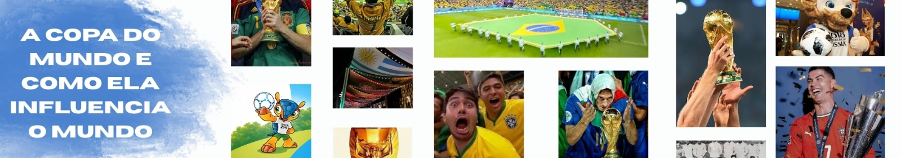
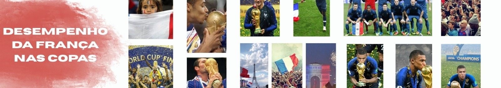
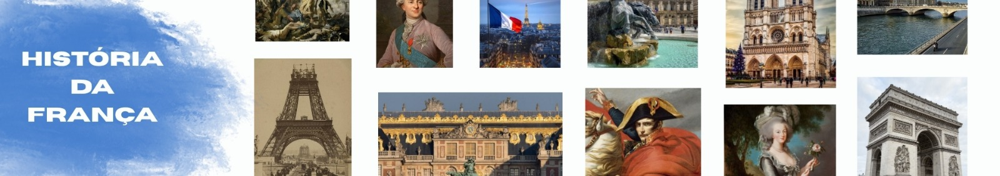
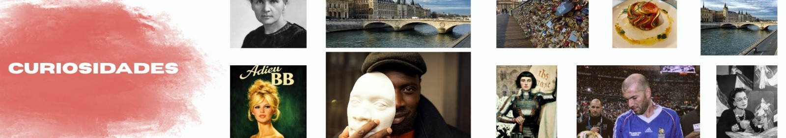

A França venceu com domínio total.

O maior torneio de futebol do mundo.

A França tem campanhas históricas.

Uma seleção com tradição mundial.

Fatos interessantes sobre a França.
Esse site foi feito por Isaac Costa, Manuela Baptista, Gabrielly, Marcelly Chaves e Clécio Filho.